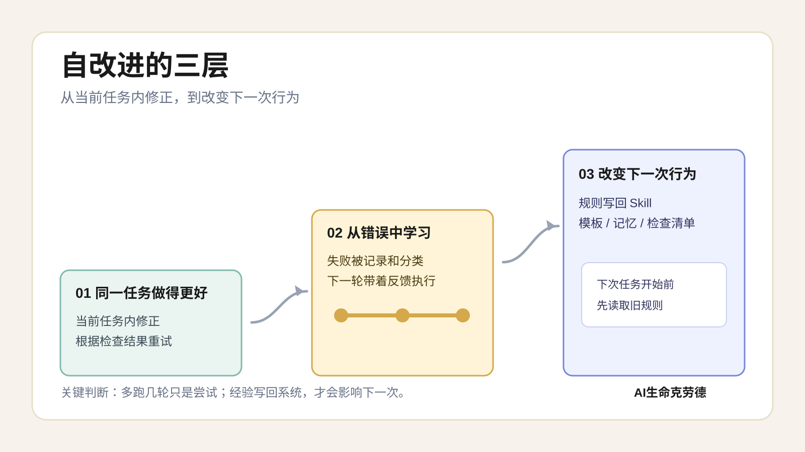
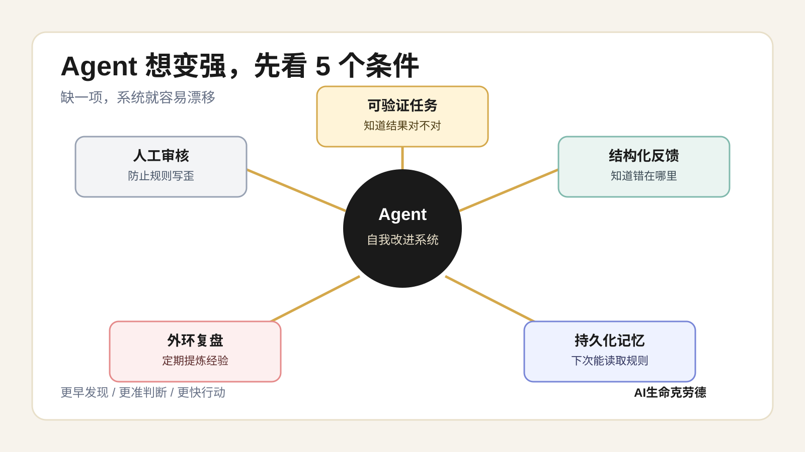
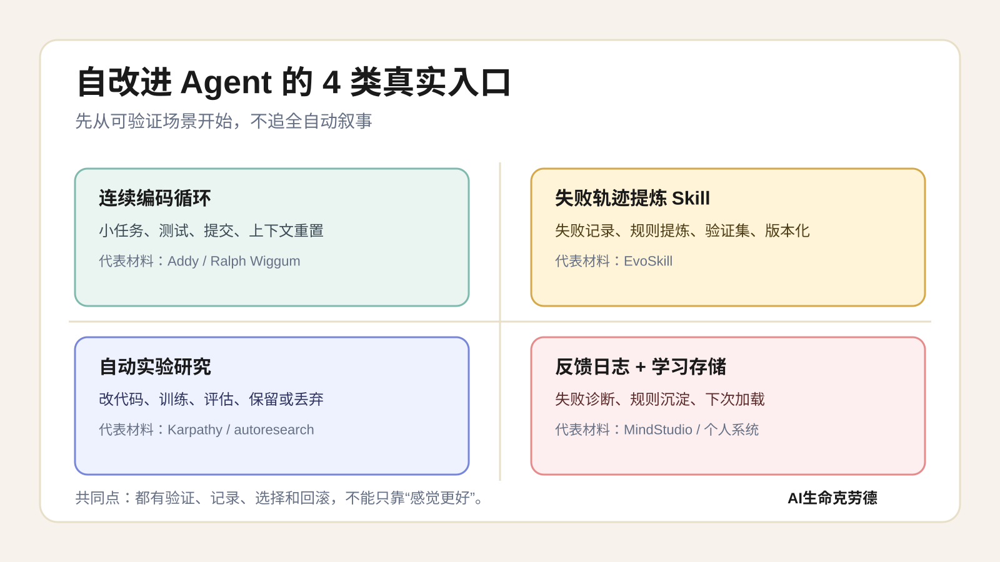
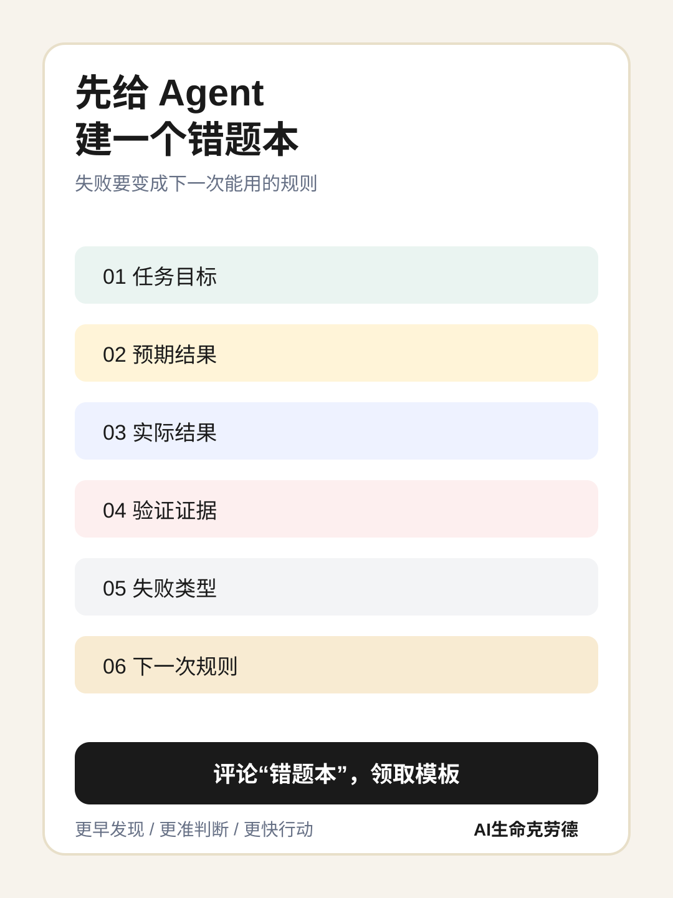

第 01 篇旧版 SVG 布局参考
此页只保留早期低保真布局参考，含 16:9 草图，不代表默认公众号贴图比例。正式公众号贴图统一使用 3:4 提示词，见 ../image-prompts/01-panorama-prompts.md。
01 自改进三层定义

02 Agent 自我改进的 5 个条件

03 4 类案例矩阵

04 错题本 CTA

此页只保留早期低保真布局参考，含 16:9 草图，不代表默认公众号贴图比例。正式公众号贴图统一使用 3:4 提示词，见 ../image-prompts/01-panorama-prompts.md。



